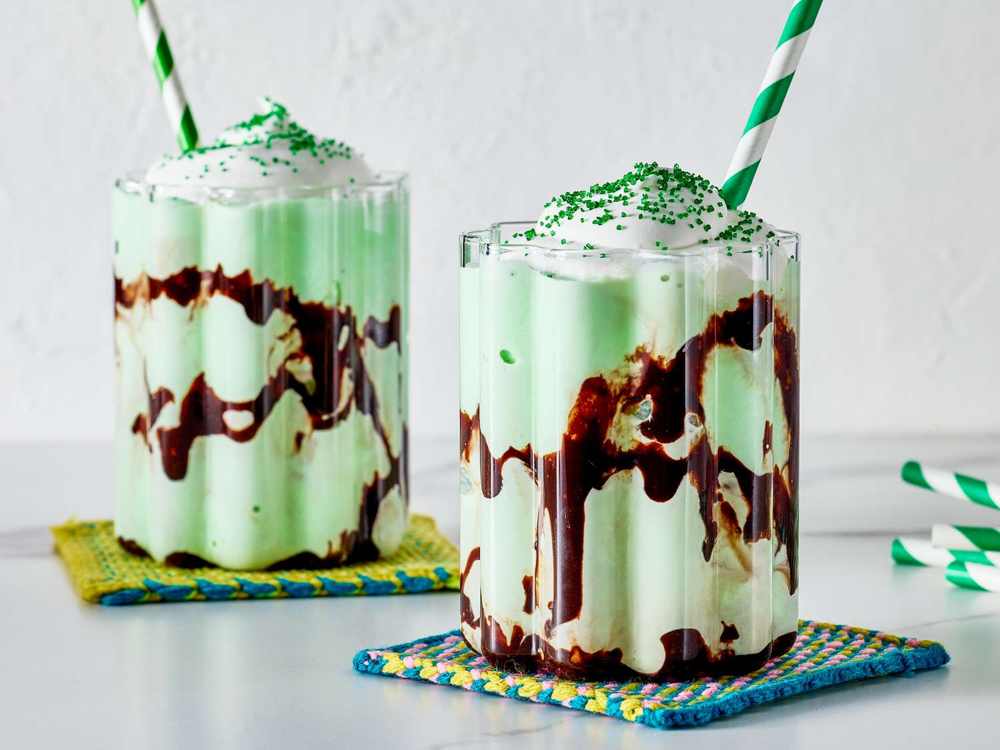

Shamrock Shakes
Home

This creamy Shamrock Shake is a blend of vanilla ice cream, milk, mint extract, and green food coloring for a fun St.
Patrick's Day treat.
This recipe has become a tradition in our house. The kids love it, and so do I!
- Ice cream and milk: Like many milkshakes, this Shamrock Shake starts with vanilla ice cream and milk.
- Mint extract: Mint extract gives the shake its signature minty freshness. It packs a powerful punch, so use the extract sparingly.
- Food coloring: About nine drops of green food coloring will dye your milkshake a gorgeous emerald hue.
- Chocolate syrup: Drizzle chocolate syrup inside the glass for an impressive presentation.
- Whipped cream: Top the Shamrock Shake with store-bought or homemade whipped cream.
- Decorating sugar: A sprinkle of green decorating sugar is the perfect finishing touch.
- Blend the ice cream, milk, extract, and food coloring in a blender.
- Drizzle inside of the glass with chocolate syrup.
- Pour the shake into the glass, then top with whipped cream and sugar.